SeUV UX.
대형 SeUV의 실내 공간과 웰니스 경험을 위한 컨셉을 발굴하고, PoC 목업으로 만들어 사용성 테스트에 썼습니다.
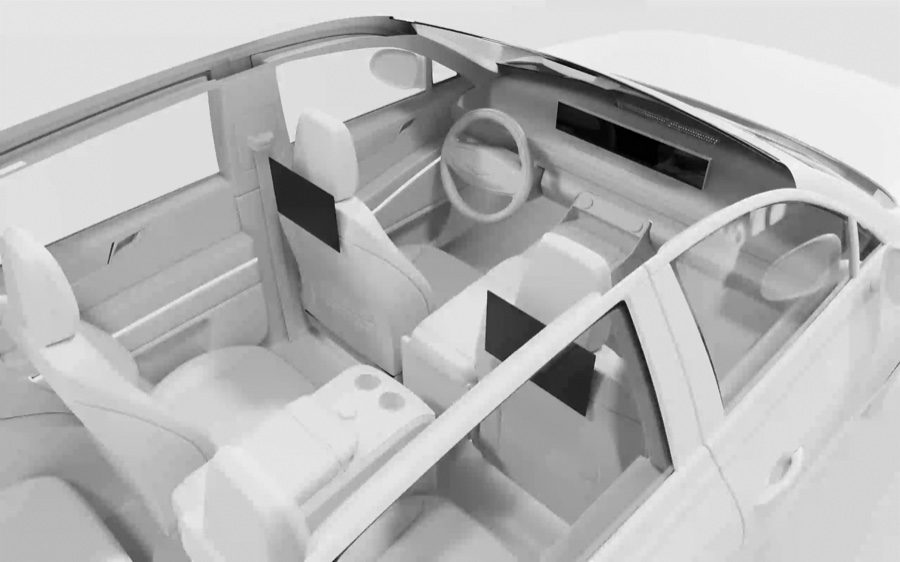
- HMC 2022.12 — 2023.01 Hyundai Product UX × 마크로밀엠브레인
- PoC Usability Test PoC 목업 항목별 사용성 테스트
쉬고, 머무는 대형 SeUV
A large SeUV made for resting and staying
캐빈 살균, 무드 큐레이터, 감응형 엠비언트 라이트, 원격 시트 베리에이션, 후석 엔터테인먼트, OTT 디스플레이, 클램쉘 테일게이트 등 공간과 웰니스 항목을 발굴하고, 항목별로 3D 애니메이션, 앱 UI, 1:1 폼보드 목업으로 구체화했습니다.
Space and wellness items such as cabin sterilisation, a mood curator, responsive ambient light, remote seat variation, rear entertainment, OTT displays and a clamshell tailgate were developed and made concrete through 3D animation, app UI and full-scale foam-board mock-ups.
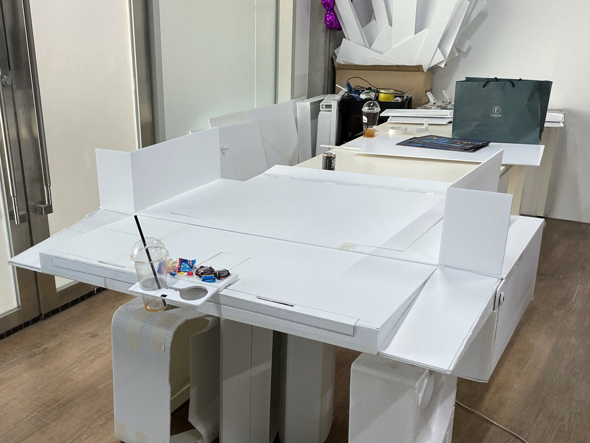
테일게이트를 펼쳐 앉고 쉬는 공간으로 쓰도록, 그 위에서 쓰는 액세서리를 1:1 폼보드로 만들어 직접 시연했습니다.
To use the opened tailgate as a place to sit and rest, the accessories used on it were built in full-scale foam board and demonstrated in person.
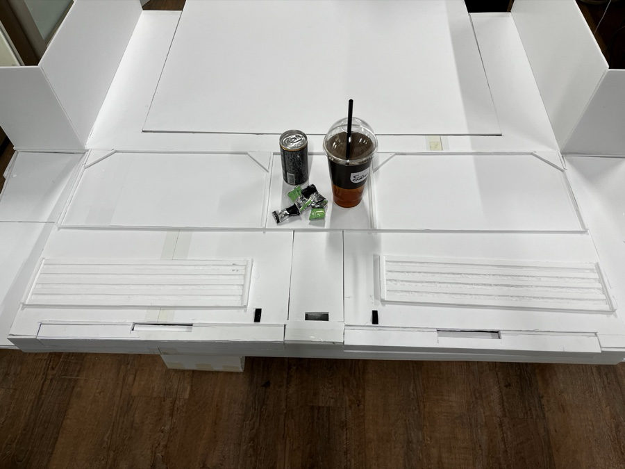
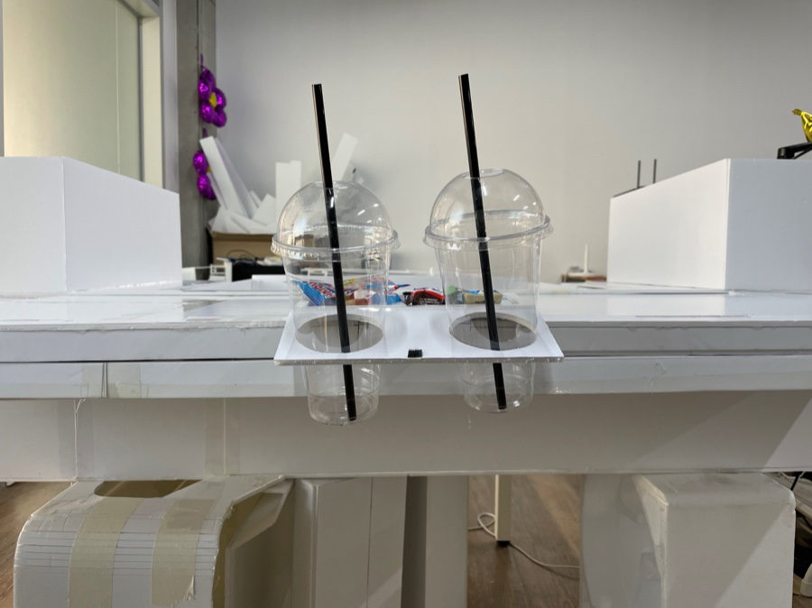
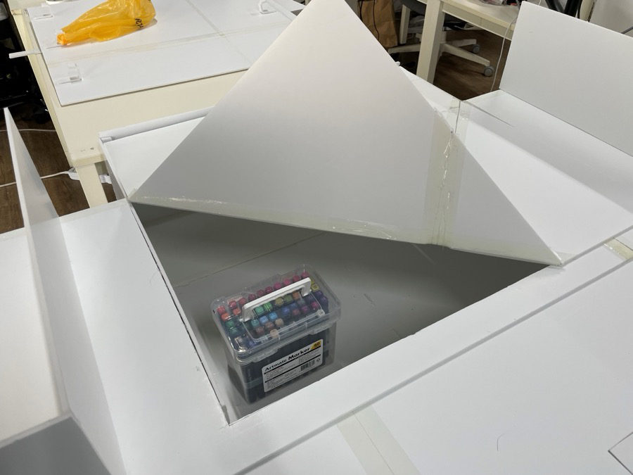
시트 배열 7가지 모드, 후석 보조 모니터, 캐빈 살균 로직, 무드 큐레이터 등 웰니스 항목을 시나리오와 목업으로 구체화했습니다.
Wellness items such as seven seat-arrangement modes, rear auxiliary monitors, cabin-sterilisation logic and a mood curator were developed through scenarios and mock-ups.
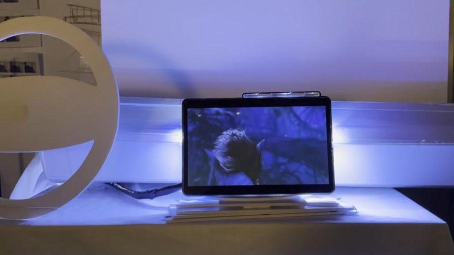
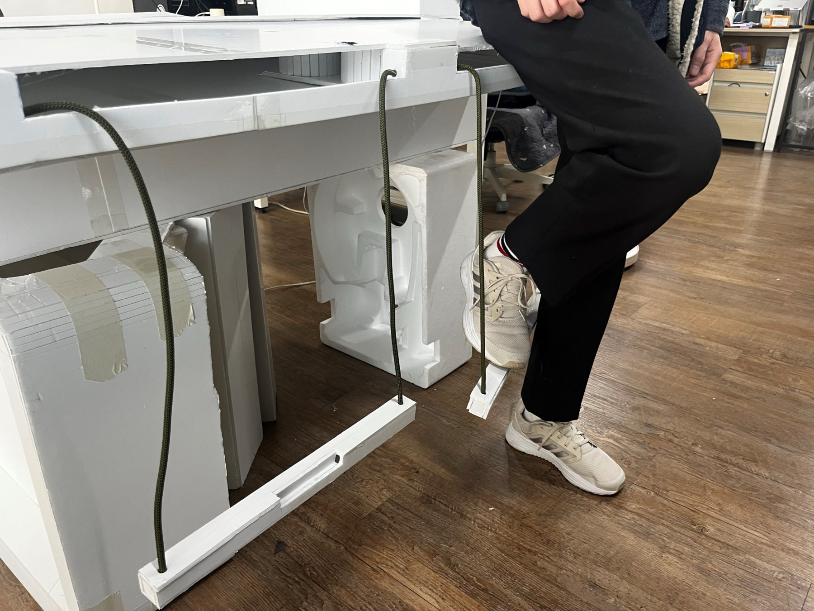
테일게이트 컵홀더, 실리콘 트레이 A/B 타입과 러기지보드 A/B/C 타입, 베드 끝에 수납되는 발걸이를 폼보드로 만들어 실제 높이와 크기를 확인했습니다.
Tailgate cup holders, silicone trays (types A/B), luggage boards (types A/B/C) and a footrest that stows at the end of the bed were made in foam board to check real heights and sizes.
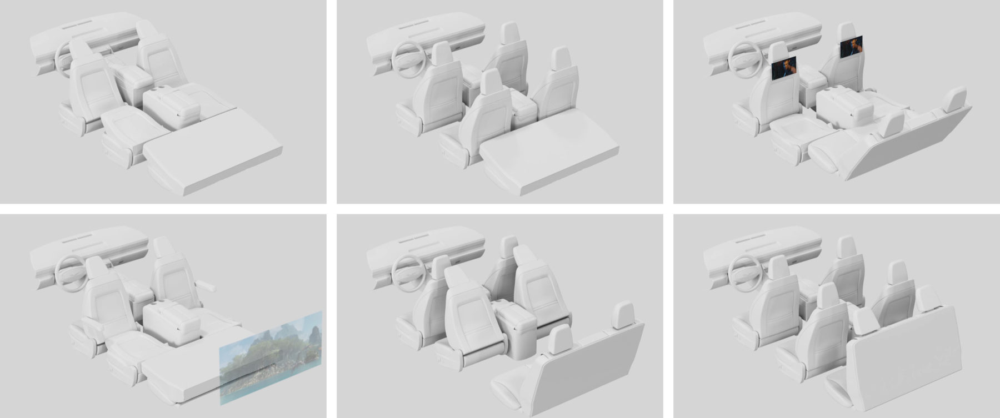
앱으로 1·2·3열 시트를 원격 조절하는 시트 배열 7가지 모드를 제안했습니다.
Seven seat-arrangement modes were proposed, with first- to third-row seats adjusted remotely from an app.
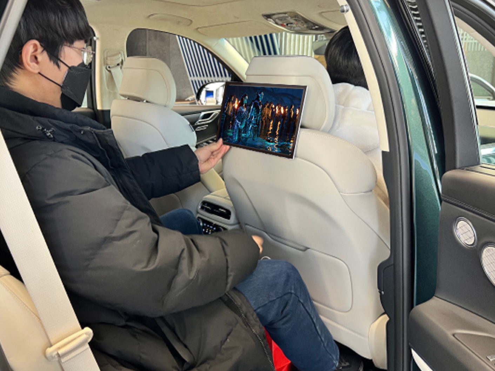
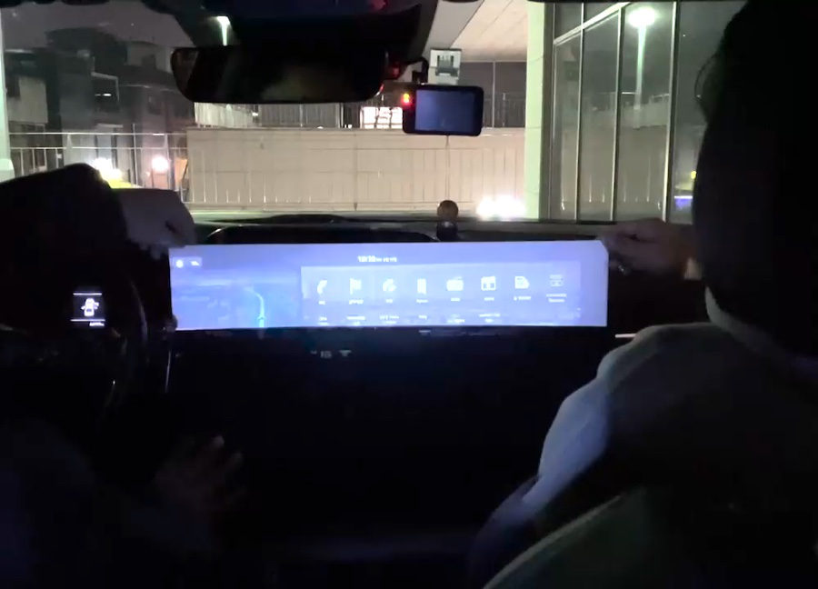
Rear Entertainment
후석 보조 모니터를 인치별로 실차에서 비교 검증했습니다.
Rear auxiliary monitors were compared by screen size in a real vehicle.
OTT Display
고정형과 팝업형 OTT 디스플레이를 제안했습니다.
Fixed and pop-up OTT displays were proposed.
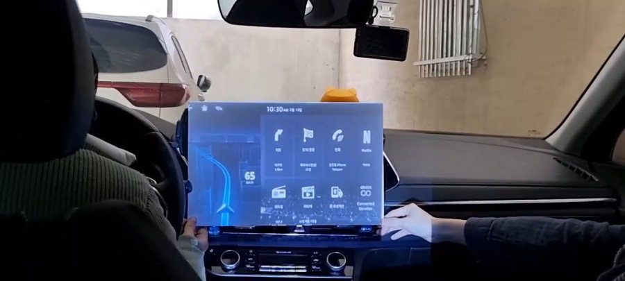
항목마다 PoC 목업을 만들어 마크로밀엠브레인의 사용성 테스트에 썼습니다.
A PoC mock-up was built for each item and used in Macromill Embrain's usability tests.